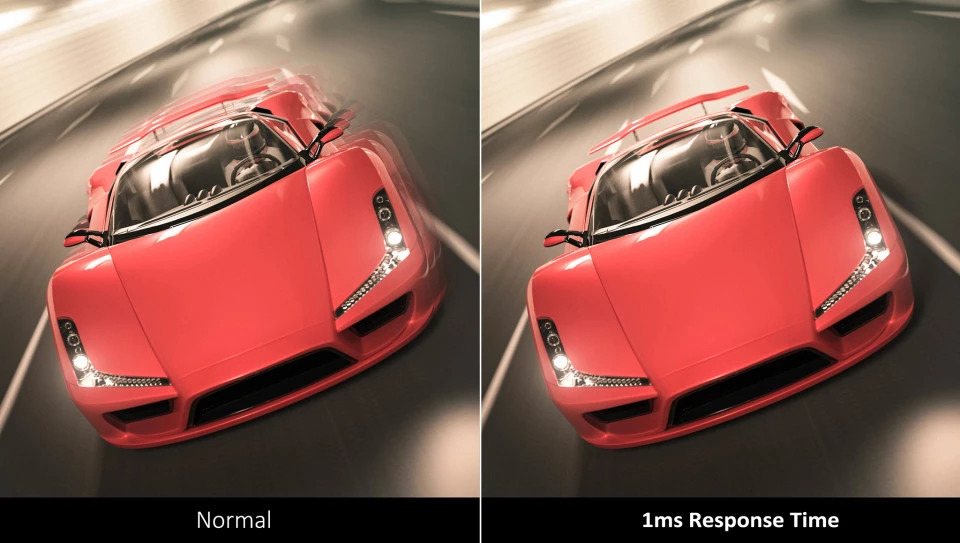

Завдяки вигнутому екрану з ефектом занурення та частоті оновлення 165 Гц монітор ViewSonic VX2718-2KPC-MHD забезпечує приголомшливий досвід перегляду. Монітор має вигнуту панель з кутом нахилу 1500R і без полів для повного занурення в атмосферу. Висока частота оновлення 165 Гц забезпечує плавне відображення анімації з мінімальною затримкою вхідного сигналу, а технологія AMD FreeSync™ Premium запобігає розривам і перериванням для забезпечення плавного ігрового процесу. Завдяки часу відгуку MPRT 1 мс монітор забезпечує безпрецедентну якість і швидкість роботи. VX2718-2KPC-MHD також оснащений ексклюзивними пресетами ViewSonic ViewMode™, які забезпечують оптимізовану продуктивність екрану для різних домашніх розважальних цілей: перегляд фільмів, редагування або гра у відеоігри. Крім того, DisplayPort і два входи HDMI забезпечують гнучке підключення як для загального використання, так і для розваг.
Завдяки вигнутому екрану з радіусом вигнутості 1500R монітор VX2718-2KPC-MHD забезпечує справді захопливе враження від перегляду, яке дає вам змогу насолоджуватися приголомшливими чіткими панорамними зображеннями.

Завдяки високій частоті оновлення 165 Гц цей монітор забезпечує чудову плавність зображення та бездоганну графіку, незалежно від того, наскільки швидко розгортаються ігрові дії.

Час відгуку 1 мс (MPRT) забезпечує кращу продуктивність завдяки плавному переключенню пікселів від кольору до кольору та зменшенню "Ghost-ефекту".
Завдяки технології AMD FreeSync™ монітор здатен самостійно адаптуватися, для зменшення коливання та стрибків зображення.

З функцією стабілізації чорного від ViewSonic ви можете плавно рухатися в тіні. Коли цю функцію увімкнено, найтемніші сцени підсвічуються для покращення видимості, щоб ви могли розгледіти найдрібніші деталі та залишатися попереду інших.

З роздільною здатністю вдвічі вищою, ніж у традиційного дисплея з роздільною здатністю 1080p, QHD забезпечує набагато чіткіше зображення без спотворень і розтягування, зберігаючи при цьому те саме співвідношення сторін 16:9.
Ексклюзивний режим ViewMode від ViewSonic пропонує спеціалізовані пресети для різних сценаріїв використання, включаючи режими Game, Movie, Web, Text, Mac та Mono. Ці пресети покращують гамму та температуру кольорів, контрастність і яскравість, щоб забезпечити оптимальні характеристики перегляду для кожної програми.